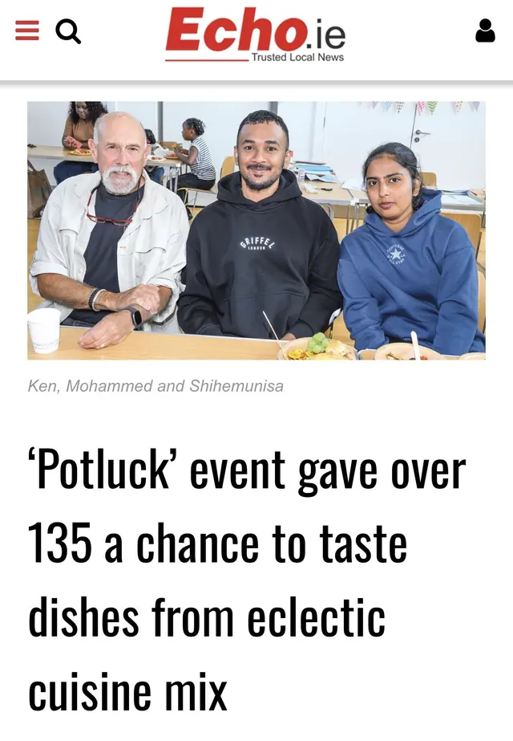
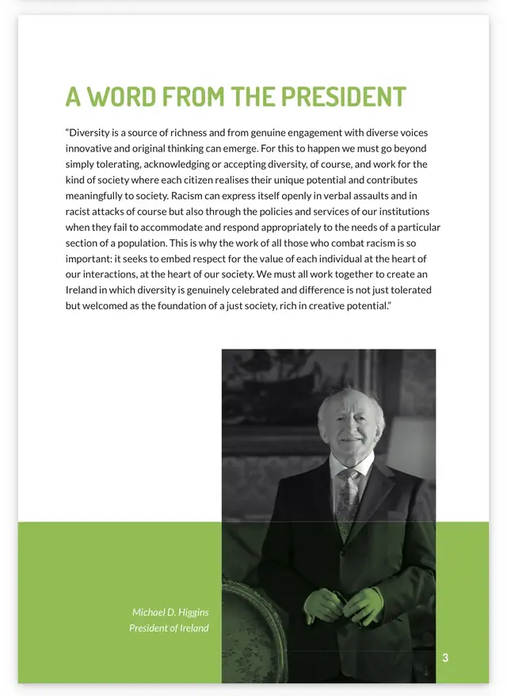
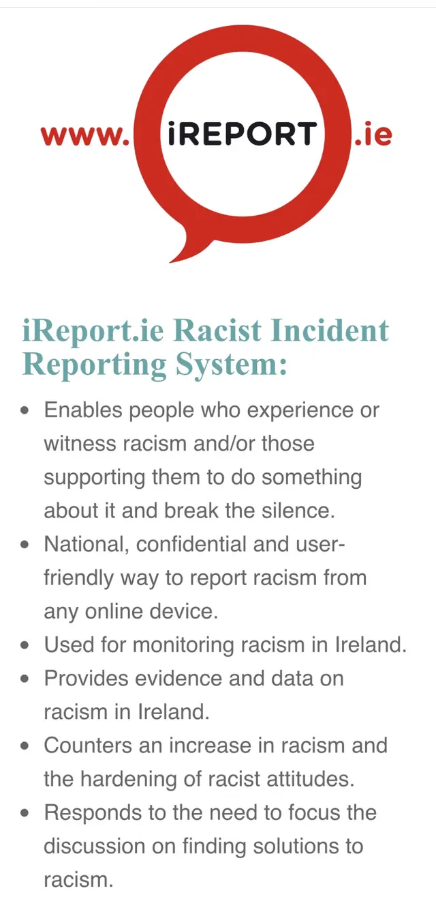

What we do
We help people join in, support fair access to local services, and work to make Saggart and Citywest safe and welcoming. We respect people’s dignity, identities and right to participate. The group has no political affiliation.
How we work
Mission statement
Saggart & Citywest Together is a group of locals striving to see our communities flourish and thrive through collective action. By encouraging engagement from all ages and backgrounds, we can lobby for better services and access in the local area while making Saggart & Citywest safe, fun, and vibrant places to live for all residents.
We are volunteer-led and, as a group, have no political affiliation.
Resident-led
People living in Saggart and Citywest can suggest ideas and start activities that help the community.
Inclusive and respectful
Everyone should be treated with dignity and respect. We challenge racism and discrimination and consider the needs of the whole community.
Open and accountable
The committee works towards agreement, holds an annual general meeting (AGM) and keeps financial records. It has rules to prevent personal interests from affecting group decisions.
Safe and welcoming
S&CT is committed to protecting children, young people and adults at risk, taking concerns seriously and working with relevant agencies where needed.
Community in action

Read The Echo’s coverage of the community potluck (opens in a new tab)In August 2026, Saggart & Citywest Together brought more than 135 people together for a community potluck at Saggart Schoolhouse Community Centre. local residents shared food from a wide range of cultures, supported by collaboration with South Dublin Volunteer Centre, Saggart Tidy Towns, Saggart Schoolhouse Community Centre, South Dublin County Council and South Dublin County Partnership.
How the area has changed
From the early community around Teach Sacra, through farming, the Swift Brook Paper Mill and the Blessington steam tram, Saggart has always been connected to wider change. Citywest, the N7 and the Luas brought another period of rapid growth. Today, people with deep local roots and people who have made their home here more recently (whether from elsewhere in Ireland or from other countries) share the area.
Understanding this history helps us discuss change in a grounded, respectful way and work together for a safe, welcoming and vibrant community.
How we challenge racism

Racism can happen between people and through the rules and everyday practices of organisations. It can happen even when people do not intend it. We use clear, respectful language and avoid unfair assumptions about groups of people. We listen to people who experience racism and support their equal say in community life.

(opens in a new tab)If you experience or witness racism in Ireland, you can confidentially record it through iReport.ie (opens in a new tab) and find practical guidance through INAR’s Responding to Racism Guide (opens in a new tab). Call 999 or 112 where there is an immediate danger.
How we check our content
Information about the group comes from its agreed rules and community plans. We use guidance from the Irish Network Against Racism (INAR) to explain racism, migration and inclusion clearly and respectfully. Local history and civic content uses public information from South Dublin County Council, the Placenames Database of Ireland and official heritage resources. Population figures come from the Central Statistics Office’s Census 2022 reports. We say which area each figure covers, because town, county and neighbourhood boundaries differ. Those organisations have not formally reviewed this website, and we do not speak for them.
Sources we use
- The Echo: Saggart & Citywest Together community potluck, August 2026 (opens in a new tab)
- CSO Census 2022: Population Distribution (opens in a new tab)
- CSO Census 2022: Population by age group and town (opens in a new tab)
- CSO Census 2022 Interactive Map (opens in a new tab)
- South Dublin County Council: Saggart Village (opens in a new tab)
- Citywest, Saggart, Rathcoole and Newcastle neighbourhood (opens in a new tab)
- South Dublin County Heritage Plan (opens in a new tab)
- County Development Plan written statement (opens in a new tab)
- Walking and Hiking (opens in a new tab)
- Community Development (opens in a new tab)
- Saggart Schoolhouse Community Centre (opens in a new tab)
- An Garda Síochána Station Directory (opens in a new tab)
- St Mary’s GAA Club (opens in a new tab)
- Teach Sagard / Saggart (opens in a new tab)
- INAR: Understanding racism in Ireland (opens in a new tab)
- INAR: Responding to Racism Guide (opens in a new tab)